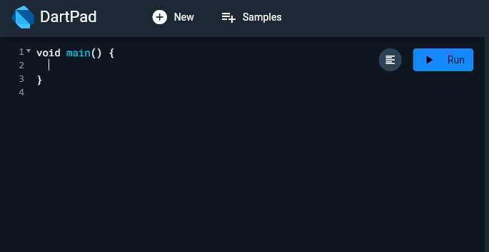
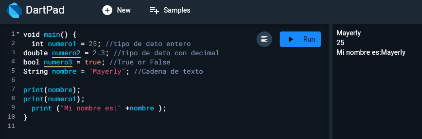
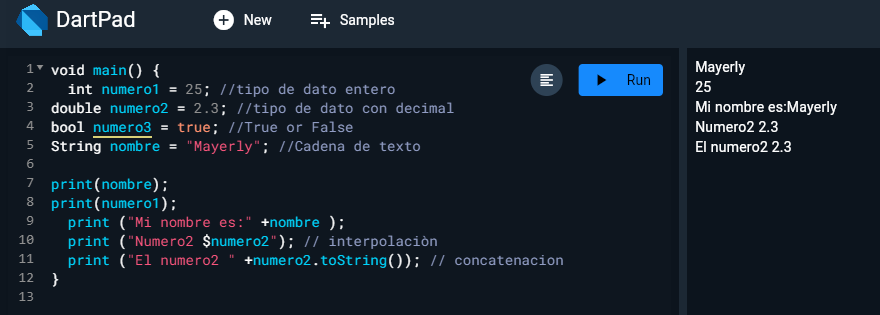
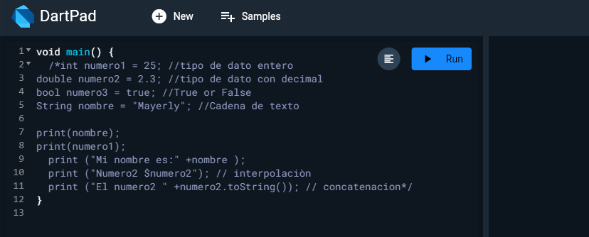
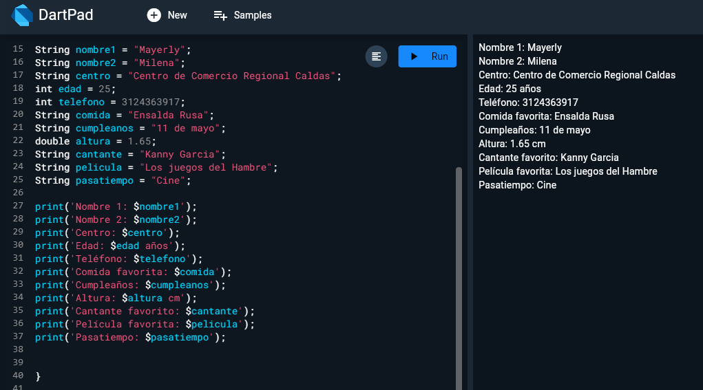
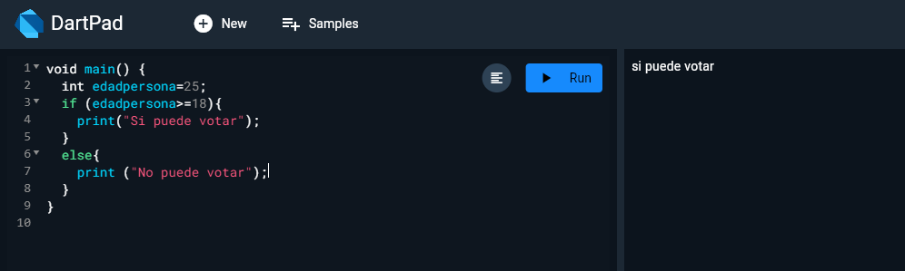
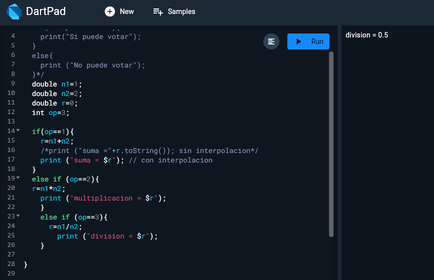
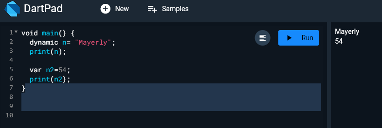
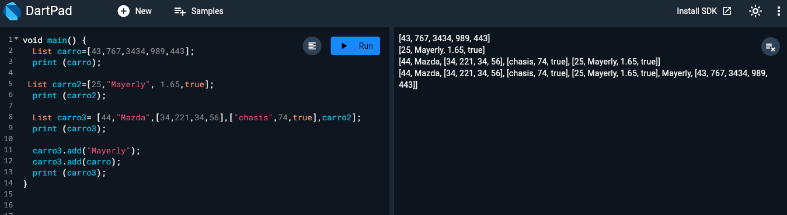

Sesiòn 1 de Flutter y Dart
Dart es lenguaje de programaciòn altamente tipado
Usa el mètodo void como c#, java y los derivados de C
Toda lìnea de codigo termina en ;
Està identado por llaves como JS

Tipos de daros en Dart

Concatenaciòn e interpolaciòn

Comentar varias lìneas de còdigo al tiempo

Reto

Condicionales en Dart

Màs condicionales

Tipos de datos Dynmaic y var

Listas
